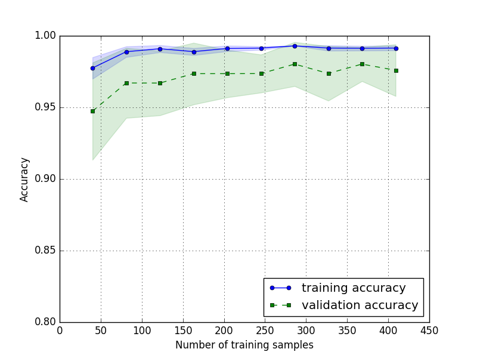
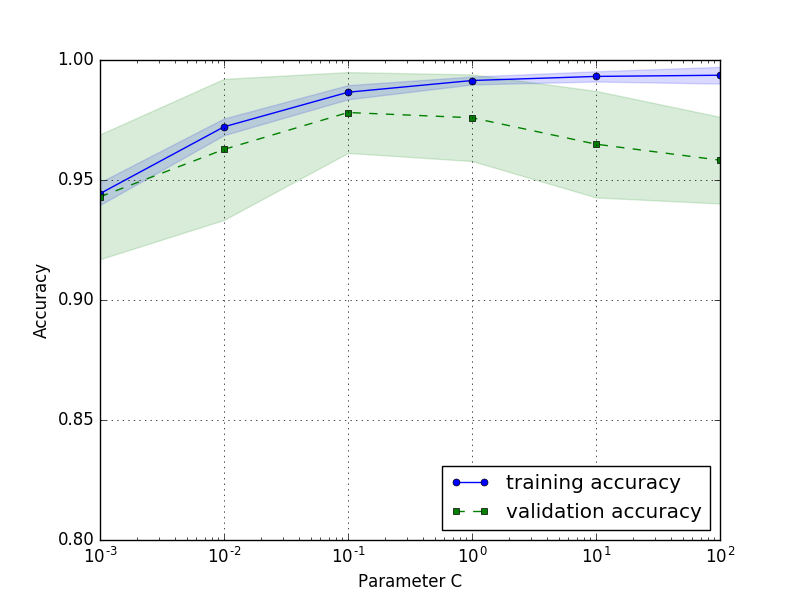
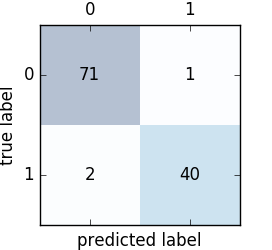

Python機械学習プログラミング¶
- 分類問題 - 機械学習ライブラリ sckit-learn の活用
- データ前処理 — よりよいトレーニングセットの構築
- 次元削減でデータを圧縮する
- モデルの評価とハイパーパラメータのチューニングのベストプラクティス
- アンサンブル学習 - 異なるモデルの組み合わせ
- ニューラルネットワーク - 画像認識トレーニング
- ニューラルネットワーク - 数値計算ライブラリT h e a n o によるトレーニングの並列化
- ニューラルネットワーク
機械学習アルゴリズムのトレーニングの構成要素¶
- 特徴量の選択
- 性能指標の選択
- 分類器と最適化アルゴリズムの選択
- モデル性能の評価
- アルゴリズムの調整
2.分類問題¶
3. 分類器と最適化アルゴリズムの選択 <- イマココ
パーセプトロン
サンプル \(\mathbf{x}^{(i)}\) と重みベクトルの内積 \(\mathbf{w}^T\mathbf{x}^{(i)}\) が
閾値 \(\theta\) より大きい場合は 1 で小さい場合は -1 のクラスであると予測する。
総入力からクラス判定を行う関数を活性化関数 (activation function) と呼ぶ。
パーセプトロンは、 活性化関数 \phi(z) に単位ステップ関数 (unit setep function) として
ヘビサイド関数 (Heaviside setp function) を用いて、総入力からクラス予測をする。
3. 分類問題¶
3. 分類器と最適化アルゴリズムの選択 <- イマココ
6 . モデルの評価とハイパーパラメータのチューニングのベストプラクティス¶
6 章の概要
- アルゴリズムのチューニング
- モデルの性能評価
- モデル構築のベストプラクティス
パイプラインによるワークフローの効率化¶
- Pipeline
- 任意の変換ステップを含んだモデルを学習し予測する仕組み
Pipeline(List[Tuple[任意の識別文字列, Union[変換器, 識別器]]])- 中間ステップの個数に制限はない
>>> # 例: データの読み込み
>>> import pandas
>>> df = pandas.read_csv('https://archive.ics.uci.edu/ml/machine-learning-databases/breast-cancer-wisconsin/wdbc.data', header=None)
>>> from sklearn.preprocessing import LabelEncoder
>>> X = df.loc[:, 2:].values
>>> y = df.loc[:, 1].values
>>> X
array([[ 1.79900000e+01, 1.03800000e+01, 1.22800000e+02, ...,
2.65400000e-01, 4.60100000e-01, 1.18900000e-01],
2.43000000e-01, 3.61300000e-01, 8.75800000e-02],
...,
[ 7.76000000e+00, 2.45400000e+01, 4.79200000e+01, ...,
0.00000000e+00, 2.87100000e-01, 7.03900000e-02]])
>>> y
array(['M', 'M', 'M', 'M', 'M', 'M', 'M', 'M', 'M', 'M', 'M', 'M', 'M',
...,
'B', 'B', 'B', 'M', 'M', 'M', 'M', 'M', 'M', 'B'], dtype=object)
>>> y = le.fit_transform(y)
>>> y
array([1, 1, 1, 1, 1, 1, 1, 1, 1, 1, 1, 1, 1, 1, 1, 1, 1, 1, 1, 0, 0, 0, 1,
...,
0, 0, 0, 0, 0, 0, 0, 0, 0, 0, 1, 1, 1, 1, 1, 1, 0])
>>> le.transform(['M', 'B'])
array([1, 0])
>>> # 例: パイプラインによる変換器と推定器の結合
>>> from sklearn.model_selection import train_test_split
>>> X_train, X_test, y_train, y_test = train_test_split(X, y, test_size=0.20, random_state=1)
>>> from sklearn.preprocessing import StandardScaler
>>> from sklearn.decomposition import PCA
>>> from sklearn.linear_model import LogisticRegression
>>> from sklearn.pipeline import Pipeline
>>> # パイプラインの構成: スケーリング => 主成分分析 => ロジスティック回帰
>>> pipe_lr = Pipeline([('scl', StandardScaler()), ('pca', PCA(n_components=2)), ('clf', LogisticRegression(random_state=1))])
>>> # 学習: fit & transform => fit & transform => fit => 学習モデル
>>> pipe_lr.fit(X_train, y_train)
Pipeline(steps=[('scl', StandardScaler(copy=True, with_mean=True, with_std=True)), ('pca', PCA(copy=True, iterated_power='auto', n_components=2, random_state=None,
svd_solver='auto', tol=0.0, whiten=False)), ('clf', LogisticRegression(C=1.0, class_weight=None, dual=False, fit_intercept=True,
intercept_scaling=1, max_iter=100, multi_class='ovr', n_jobs=1,
penalty='l2', random_state=1, solver='liblinear', tol=0.0001,
verbose=0, warm_start=False))])
>>> # テスト: transform => transform => predict
>>> 'Test Accuracy: %.3f' % pipe_lr.score(X_test, y_test)
'Test Accuracy: 0.947'
k 分割交差検証を使ったモデルの性能の評価¶
未知のデータに対するモデルの性能（モデルの汎化誤差）を評価する
モデルがバイアスとバリアンスの適度なバランスを取るように評価する
モデル選択 (model selection)
- 予測性能向上のために必要なパラメータ設定のチューニングと比較を行うプロセス
- モデルのパラメータの最適値を選択する分類問題
ホールドアウト法 (holdout method)
- 汎化性能の評価に従来より使われる一般的なアプローチ
- 元のデータセットを 3 分割する
トレーニングデータセット: 学習用 検証データセット: モデル選択 テストデータセット: 最終的な性能評価 - データセットの分割のされ方次第でモデルの性能が変わってしまう
k 分割交差検証 (k-fold cross-validation)
トレーニングデータセットをランダムに \(k\) 分割（非復元抽出）
- 標準的には \(k = 10\)
\(k - 1\) 個をトレーニング、 1 個をテストに使い、 \(k\) 回繰り返すことで \(k\) 個のモデルと性能評価を得る
- イテレーション \(i\) における性能 \(E_i\) 正解率や誤分類率
- 推定平均性能 \(E\) (\(E_i\) の算術平均)
ホールドアウト方に比べ、再分割に敏感でない性能評価
- ホールドアウト法の「データセットの分割のされ方次第でモデルの性能が変わってしまう」問題に対処
- ホールドアウト法よりもバリアンスの低い性能評価が得られる
満足な汎化性能を得られるハイパーパラメータを見つけるために利用する
層化 k 分割交差検証 (stratified k-fold cross-validation)
各サブセットでのクラス比率を維持するように抽出する
例
>>> from sklearn.model_selection import StratifiedKFold >>> for k, (train, test) in enumerate(kfold.split(X_train, y_train)): ... pipe_lr.fit(X_train[train], y_train[train]) ... score = pipe_lr.score(X_train[test], y_train[test]) ... scores.append(score) ... 'Fold: %s, Class dist.: %s, Acc: %.3f' % (k + 1, numpy.bincount(y_train[train]), score) ... Pipeline(steps=[('scl', StandardScaler(copy=True, with_mean=True, with_std=True)), ('pca', PCA(copy=True, iterated_power='auto', n_components=2, random_state=None, svd_solver='auto', tol=0.0, whiten=False)), ('clf', LogisticRegression(C=1.0, class_weight=None, dual=False, fit_intercept=True, intercept_scaling=1, max_iter=100, multi_class='ovr', n_jobs=1, penalty='l2', random_state=1, solver='liblinear', tol=0.0001, verbose=0, warm_start=False))]) 'Fold: 1, Class dist.: [256 153], Acc: 0.891' ... Pipeline(steps=[('scl', StandardScaler(copy=True, with_mean=True, with_std=True)), ('pca', PCA(copy=True, iterated_power='auto', n_components=2, random_state=None, svd_solver='auto', tol=0.0, whiten=False)), ('clf', LogisticRegression(C=1.0, class_weight=None, dual=False, fit_intercept=True, intercept_scaling=1, max_iter=100, multi_class='ovr', n_jobs=1, penalty='l2', random_state=1, solver='liblinear', tol=0.0001, verbose=0, warm_start=False))]) 'Fold: 10, Class dist.: [257 153], Acc: 0.956' >>> 'CV accuracy: %.3f +/- %.3f' % (numpy.mean(scores), numpy.std(scores)) 'CV accuracy: 0.956 +/- 0.028'
学習曲線と検証曲線によるアルゴリズムの診断¶
学習曲線 (learning curve)
サンプルサイズに対するトレーニングデータセットとテストデータセットの正解率の関数
トレーニングデータセットとテストデータセットの正解率曲線に隔たりがある場合は、過学習の可能性がある

>>> from matplotlib import pyplot >>> from sklearn.learning_curve import learning_curve >>> pipe_lr = Pipeline([('scl', StandardScaler()), ('clf', LogisticRegression(penalty='l2', random_state=0))]) >>> train_sizes, train_scores, test_scores = \ ... learning_curve( ... estimator=pipe_lr, ... X=X_train, ... y=y_train, ... train_sizes=numpy.linspace(0.1, 1.0, 10), ... cv=10, ... n_jobs=1 ... ) >>> train_mean = numpy.mean(train_scores, axis=1) >>> train_std = numpy.std(train_scores, axis=1) >>> test_mean = numpy.mean(test_scores, axis=1) >>> test_std = numpy.std(test_scores, axis=1) >>> # トレーニングの学習曲線をプロット ... pyplot.plot(train_sizes, train_mean, color='blue', marker='o', markersize=5, label='training accuracy') [<matplotlib.lines.Line2D object at 0x7f68ae467518>] >>> # u +/- sigma を塗りつぶし ... pyplot.fill_between(train_sizes, train_mean + train_std, train_mean - train_std, alpha=0.15, color='blue') <matplotlib.collections.PolyCollection object at 0x7f68ae467668> >>> # 考査検証の学習曲線をプロット ... pyplot.plot(train_sizes, test_mean, color='green', linestyle='--', marker='s', markersize=5, label='validation accuracy') [<matplotlib.lines.Line2D object at 0x7f68ae46e4a8>] >>> # u +/- sigma を塗りつぶし ... pyplot.fill_between(train_sizes, test_mean + test_std, test_mean - test_std, alpha=0.15, color='green') <matplotlib.collections.PolyCollection object at 0x7f68ae46e5f8> >>> pyplot.grid() >>> pyplot.xlabel('Number of training samples') <matplotlib.text.Text object at 0x7f68b79fd588> >>> pyplot.ylabel('Accuracy') <matplotlib.text.Text object at 0x7f68ae49dc18> >>> pyplot.legend(loc='lower right') <matplotlib.legend.Legend object at 0x7f68c4b07ef0> >>> pyplot.ylim([0.8, 1.0]) (0.8, 1.0) >>> pyplot.show()
検証曲線 (validation curve)
モデルのパラメータに対するトレーニングデータセットとテストデータセットの正解率の関数
例: ロジスティクス回帰の逆正則化パラメータ \(C\)
- 正則化パラメータ \(C\) を小さくすると学習不足に陥ることがわかる
- 正則化パラメータ \(C\) を大きくすると過学習に陥ることがわかる

>>> from sklearn.learning_curve import validation_curve >>> param_range = [0.001, 0.01, 0.1, 1.0, 10.0, 100.0] >>> train_scores, test_scores = validation_curve( ... estimator=pipe_lr, ... X=X_train, ... y=y_train, ... param_name='clf__C', ... param_range=param_range, ... cv=10 ... ) >>> train_mean = numpy.mean(train_scores, axis=1) >>> train_std = numpy.std(train_scores, axis=1) >>> test_mean = numpy.mean(test_scores, axis=1) >>> test_std = numpy.std(test_scores, axis=1) >>> # トレーニングの検証曲線をプロット ... pyplot.plot(param_range, train_mean, color='blue', marker='o', markersize=5, label='training accuracy') [<matplotlib.lines.Line2D object at 0x7f6899147630>] >>> # u +/- sigma を塗りつぶし ... pyplot.fill_between(param_range, train_mean + train_std, train_mean - train_std, alpha=0.15, color='blue') <matplotlib.collections.PolyCollection object at 0x7f6899147780> >>> # 交差検証の検証曲線をプロット ... pyplot.plot(param_range, test_mean, color='green', linestyle='--', marker='s', markersize=5, label='validation accuracy') [<matplotlib.lines.Line2D object at 0x7f689914d5c0>] >>> # u +/- sigma を塗りつぶし ... pyplot.fill_between(param_range, test_mean + test_std, test_mean - test_std, alpha=0.15, color='green') <matplotlib.collections.PolyCollection object at 0x7f689914d710> >>> pyplot.grid() >>> pyplot.xscale('log') >>> pyplot.legend(loc='lower right') <matplotlib.legend.Legend object at 0x7f68ae45ae80> >>> pyplot.xlabel('Parameter C') <matplotlib.text.Text object at 0x7f68b7579748> >>> pyplot.ylabel('Accuracy') <matplotlib.text.Text object at 0x7f6899357eb8> >>> pyplot.ylim([0.8, 1.0]) (0.8, 1.0) >>> pyplot.show()
グリッドサーチによる機械学習モデルのチューニング¶
- （モデルの）パラメータ
- トレーニングデータから学習されるパラメータ
- 例
- ロジスティック回帰の重み
- ハイパーパラメータ (hyperparameter)
- 学習アルゴリズムのパラメータ
- 例
- 正則化パラメータ
- 決定木の深さ
- グリッドサーチ (grid search)
- ハイパーパラメータの最適化
- 網羅的探索手法
GridSearchCV
- 入れ子式の交差検証 (nested cross-validation)
さまざまな性能評価指標¶
混同行列
P N P 真陽性 (True Positive) 偽陰性 (False Negative 第二種過誤) N 擬陽性 (False Positive 第一種過誤) 真陰性 (True Negative) scikit-learn でのプロット

>>> from sklearn.metrics import confusion_matrix >>> pipe_svc.fit(X_train, y_train) Pipeline(steps=[('scl', StandardScaler(copy=True, with_mean=True, with_std=True)), ('clf', SVC(C=1.0, cache_size=200, class_weight=None, coef0=0.0, decision_function_shape=None, degree=3, gamma='auto', kernel='rbf', max_iter=-1, probability=False, random_state=1, shrinking=True, tol=0.001, verbose=False))]) >>> y_pred = pipe_svc.predict(X_test) >>> confmat = confusion_matrix(y_true=y_test, y_pred=y_pred) >>> confmat array([[71, 1], [ 2, 40]]) >>> fig, ax = pyplot.subplots(figsize=(2.5, 2.5)) >>> ax.matshow(confmat, cmap=pyplot.cm.Blues, alpha=0.3) <matplotlib.image.AxesImage object at 0x7f09468dbc88> >>> for i in range(confmat.shape[0]): ... for j in range(confmat.shape[1]): ... ax.text(x=j, y=i, s=confmat[i, j], va='center', ha='center') ... <matplotlib.text.Text object at 0x7f09468e52b0> <matplotlib.text.Text object at 0x7f09468e5828> <matplotlib.text.Text object at 0x7f09468e5da0> <matplotlib.text.Text object at 0x7f09468f2358> >>> pyplot.xlabel('predicted label') <matplotlib.text.Text object at 0x7f095414c748> >>> pyplot.ylabel('true label') <matplotlib.text.Text object at 0x7f0954028e10> >>> pyplot.show()
適合率 (precision: PRE)
\[PRE = \frac{TP}{TP + FP}\]再現率 (recall: REC)・真陽性率 (TPR)
参考: https://bellcurve.jp/statistics/glossary/2014.html
実際に陽性だった場合に、陽性と判定される割合
\[REC = TPR = \frac{TP}{FN + TP}\]F1 スコア (F1-score)
PRE と REC の調和平均
\[F1 = 2 \frac{PRE \times REC}{PRE + REC}\]誤分類率 (ERR)
\[ERR = \frac{FP + FN}{FP + FN + TP + TN}\]正解率 (accuracy: ACC)
\[ACC = \frac{TP + TN}{FP + FN + TP + TN} = 1 - ERR\]受信者操作特性 (Receiver Operator Charactaristic: ROC)
- 性能に基づいて分類モデルを選択するためのツール
- 分類器の閾値をかえる
- FRP/TRP を計算する
- 対角線は当て推量（ランダムな推量）と解釈できる
- 対角線を下回ると当て推量より劣る
- 完璧なモデルは TRP = 1, FRP = 0 となる
曲面下面積 (Area Under the Curve:AUC)